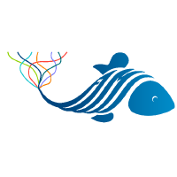
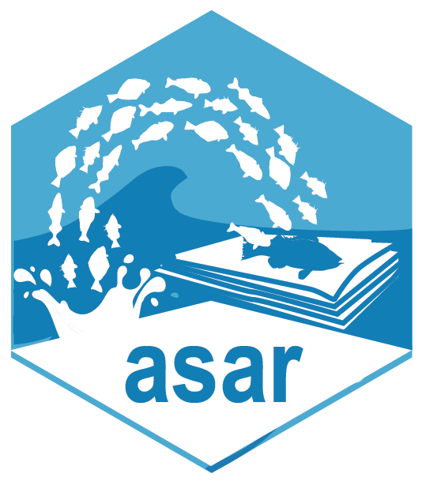
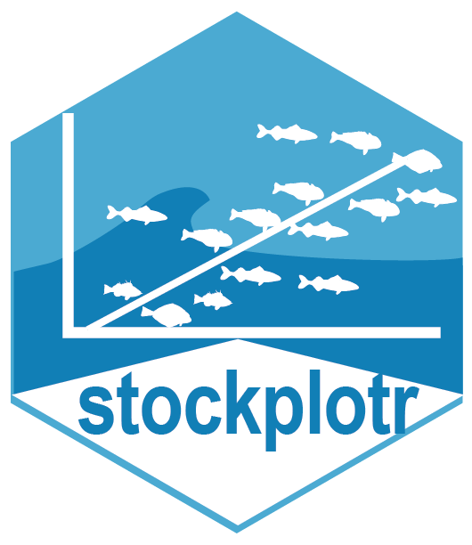
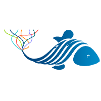
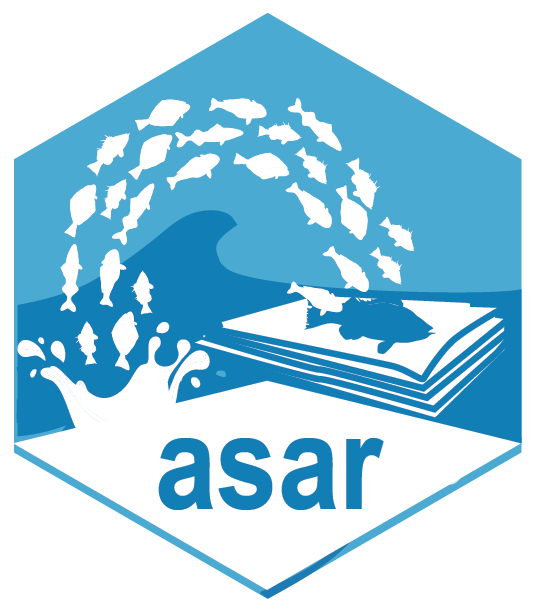
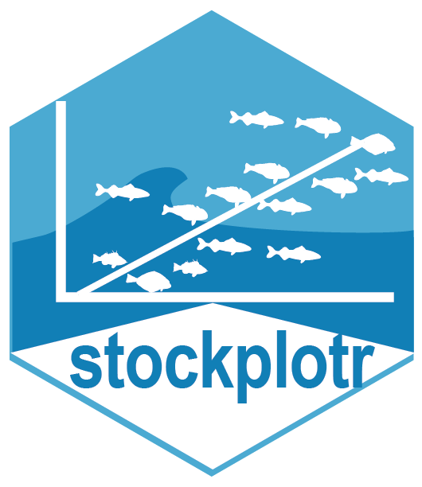

🎏 NSAP
A list of NSAP team members and projects they are involved in.
flowchart TD;
A(["Navigate to Issues"]) --- A0(("Branch Director")) & A1(("New Employee")) & PL(("Project Lead"));
A0 --> B(["Create a new Issue using 'Onboard Team Member' issue type"]);
A1 ----> G["Read through Getting Started Instructions"];
B --> C(["Follow instructions in the Issue"]);
C --> E["Assign Issue to Onboardee"];
PL --> D["Add project specific command (e.g., comment /onboard-FIMS)"];
G --> new("Navigate to your Onboarding Issue and complete onboarding tasks or comment on the issue to get help when you reach roadblocks");
new --> F["Close Issue after tasks are completed"];
E ---> H["Direct employee to this README"];
E@{ shape: lin-rect};
D@{ shape: lin-rect};
F@{ shape: dbl-circ};
H@{ shape: div-rect};
style A fill:transparent;
style A0 fill:#BBDEFB;
style A1 fill:#C8E6C9;
style PL fill:#F54927,fill:#E1BEE7,color:none;
style B fill:#BBDEFB;
style G fill:#C8E6C9;
style C fill:#BBDEFB;
style E fill:#FFE0B2;
style D fill:#E1BEE7;
style new fill:#C8E6C9;
style F fill:#D50000;
style H fill:#FFCDD2;
click A "https://github.com/nmfs-ost/on-off-boarding/issues";
click G "/getting-started.qmd";
flowchart TD;
A(["Navigate to Issues"]) --- A0(("Branch Director")) & A1(("Employee"));
A0 --> B(["Execute command for offboarding from team and project."]);
A1 ----> G["Read through offboarding task list"];
B --> E["Reassign Issue to offboardee"];
G --> F["Check off each task after they are completed"];
E --> H["Once employee is offboarded, close out their profile."]
E@{ shape: lin-rect};
D@{ shape: lin-rect};
F@{ shape: dbl-circ};
H@{ shape: div-rect};
style A fill:transparent;
style A0 fill:#BBDEFB;
style A1 fill:#C8E6C9;
style B fill:#BBDEFB;
style G fill:#C8E6C9;
style E fill:#FFE0B2;
style F fill:#D50000;
style H fill:#FFCDD2;
click A "https://github.com/nmfs-ost/on-off-boarding/issues";
Only projects that are associated with a GitHub repository are listed in the table below. There is an additional list of projects on the home page which includes projects that don’t have associated GitHub repositories.

| Project | Stars | Status | Description |
|---|---|---|---|
| FIMS |  |
 |
Fisheries Integrated Modelling System |
| asar |  |
 |
Partially Automated Stock Assessment Reporting |
| stockplotr |  |
|
Tables and figures for stock assessment documents |
| ss3-source-code |  |
 |
Stock Synthesis source code |
| DisMAP |  |
 |
Distribution Mapping and Analysis Portal |
| FIT |  |
|
Fisheries Integrated Toolbox |
| journals |  |
 |
Bibliography files for journals of interest to fisheries |
| nmfspalette |  |
R Color palette for NOAA Fisheries official colors |


   
  


AI tools are currently under pilot use and only some users have access to GitHub copilot.